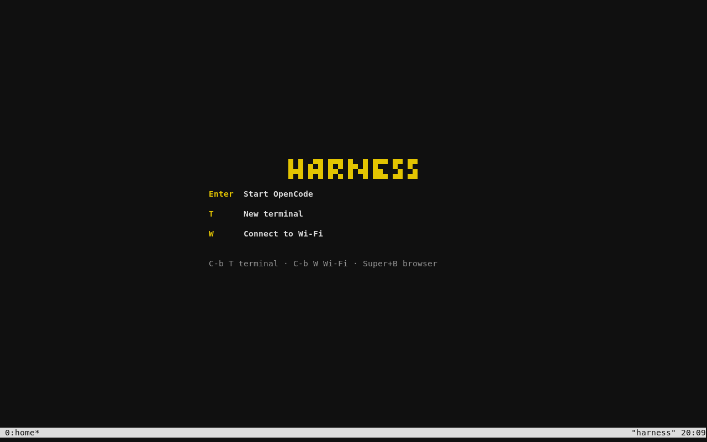
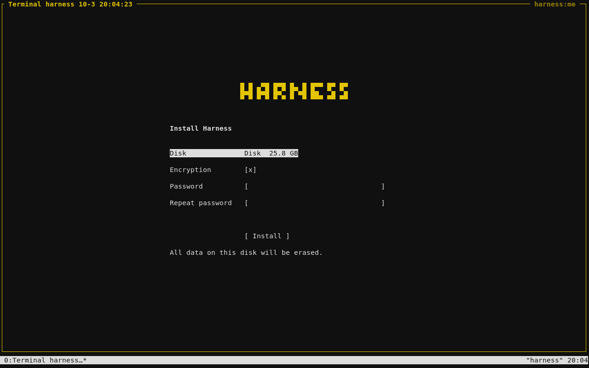
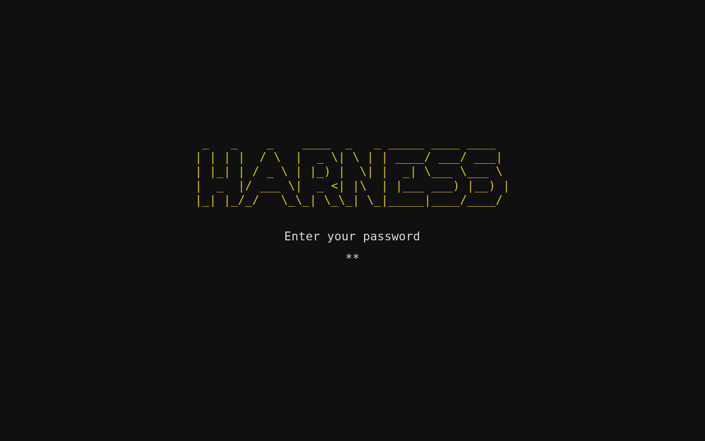
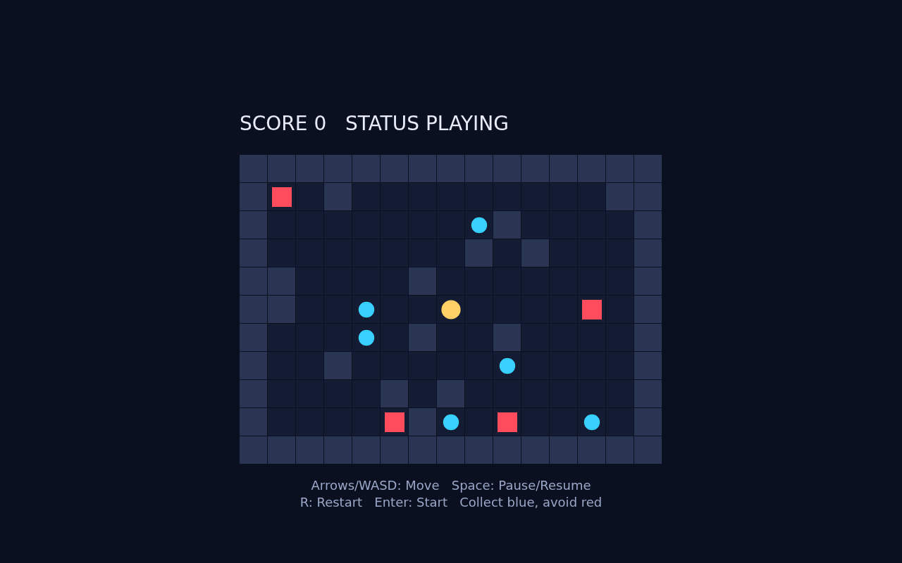

An operating system built around agents Preview 6
Agents are
the new apps.
Turn on your computer.
Tell it what to build.
Harness boots into a place to work with agents. Describe the task. Let them use the tools. Review what they make, right in the terminal.
A browser when the work needs one.
Built for programmers first.


Conversation is the interface
There’s an agent
for that.
Build a backend. Fix a bug. Make a game. The starting point is a conversation. Code, commands, diffs, and tests make the work visible.
- 01
Your agents, in their own panes.
Claude Code, Codex, OpenCode, or pi. Press Ctrl + B, then Shift + N to start one. Keep several conversations going and move between them from the keyboard.
- 02
Ask. Build. Review.
Have the agent set up the tools your project needs. Read the changes. Run the tests. Keep going. Want to enter a command yourself? New terminal opens a shell immediately.
- 03
A browser, when it helps.
Most work can be reviewed in the terminal. For a website, a game, or a visual viewer, Super + B opens Chromium or switches back to Harness. The browser stays closed until you ask.
The whole OS experience
Install. Boot. Work.
A few choices up front.
Then straight into Harness.


01 Install from USB.
Press Enter on the welcome screen. Choose a disk, keep encryption on or turn it off, enter your password twice, and install. It works offline.
Want to try first? Press T. Connect to Wi-Fi if needed, then start the bundled OpenCode with its default settings.


02 Unlock. Start making.
Remove the USB and boot your computer. On an encrypted install, enter your password to open Harness. Your account is already me@harness.
Start OpenCode, choose another agent, or open a terminal. OpenCode is included; other agents install when selected. Their accounts and model usage are yours.
Real screens from preview 6. Installation erases the entire selected disk. Read the installation guide below.
Built by subtraction
No panels.
No wallpaper.
No ceremony.
A terminal for the conversation. A browser for work that needs a visual surface. The rest starts with what you ask an agent to do.
Underneath is ordinary Arch Linux: the LTS kernel, a package manager, your files, and administrator access. Compilers, databases, containers—install what the project calls for. Your agents can handle the setup.
Wi-Fi, audio, clipboard, screen locking, and recovery are included. Minimal still has to be a working computer.
Under the surface Arch Linux labwc foot hn Chromium
Small. Measured.
Read the evidence- ISO download
- 1.63GiB
- Settled idle memory
- ~390MiB
- Offline VM installation
- 37–70sec
Preview 6 measurements in 2-vCPU, 1-GiB x86 VMs installed from virtual USB. Idle memory is with agents and browser closed. Installation took 37 seconds without encryption and 70 seconds with encryption, excluding the download and answering prompts. Physical hardware will differ.
What has actually been tested?
The keyboard installer, BIOS and UEFI USB boot, automatic RAM-image detection, offline installation, encrypted disks, wrong-password retry, clipboard, browser switching, update retry, and recovery that preserves projects. This image passed at 1 GiB RAM and in 4 GiB USB copy-to-RAM mode, including a real first agent conversation typed through the keyboard. Separate update tests preserve a running OpenCode agent and terminal through hn and CLI activation, failed-start recovery, and rollback.
Installed BIOS boot reached Harness readiness in 16.2 seconds, including automated login. Encrypted boot showed the password prompt in 6.0 seconds and reached Harness 8.4 seconds after the correct password was submitted. Settled idle memory was 368–396 MiB. These are VM observations, not physical power-on benchmarks.
Inside preview 6, OpenCode agents built a Python CLI, a website, a keyboard game, and a Fastify/SQLite app. Their 33 unit tests and independent browser/API checks passed, along with three harness exercises using the shared viewers. Download their source, screenshots, and exact test history separately.
A user has now reported a successful preview 4 installation, boot, and use on their ThinkPad. This is a user report, without measured hardware timings. Selected Broadcom drivers also passed offline installation and rebuilding in a VM. Physical Wi-Fi, suspend, Intel Mac support, and NVIDIA workloads still need model-specific validation.
Download the projects and harness examplesSee a game built inside the OS.

Signal Run. Built with HTML, CSS, and JavaScript by OpenCode inside preview 6. Tested with the keyboard at two laptop resolutions. This is project output, separate from the system image.
0.1.0-preview.6
Give it a machine.
Make something.
An x86-64 Intel or AMD PC with SSE4.2 for OpenCode. Start with 2 GiB RAM and a spare disk of at least 12 GiB. Secure Boot off. A disposable x86 VM works too.
USB installation guide- Download the ISO and verify its checksum.
- Write the whole image to a USB stick and boot it.
- Press Enter on the welcome screen to install.
The installer erases the entire selected disk. It does not resize an existing OS. Back up that disk first. Encryption is on by default.
Choose your disk, set encryption, and enter your password twice. Choose Install to erase that disk and begin. There is no second confirmation. Your account is me@harness.
Can I install it on a Mac or an NVIDIA machine?
The current image targets x86-64 PCs. Older Intel Macs with 64-bit EFI and no T2 chip are an experimental target: hold Option at startup, choose EFI Boot, and try Harness before installing. The USB includes offline Wi-Fi drivers for selected BCM4331 and BCM4360 radios; ordinary installations keep those extra packages only when needed. Physical Mac testing is still required.
Core 2 CPUs cannot run bundled OpenCode; Harness explains this before trial setup and leaves the terminal available. T2 Macs, Apple Silicon, and Raspberry Pi need separate hardware work. NVIDIA desktops with RTX 4090 and 5090 cards are next. This preview does not promise local models out of the box.
Hardware roadmapAlready installed? Update without flashing again.
Harness prepares hn and CLI updates automatically. A small notice appears when one is ready. Press Super + U, then Enter to apply it. The screen reconnects; your running agents, terminals, and tabs stay with you.
System updates live in the same screen, with a recovery checkpoint and a restart when you are ready. On preview 5, use Updates to get preview 6. Still on preview 4? Apply the 7.1 MB bootstrap bundle once to get this update path. Routine updates do not require another USB flash.
Update instructions and verified downloadDo I need an Autonomous Computer?
Use your own compatible computer. The longer-term plan also brings Harness to the Autonomous Computer, with an optional Harness device for input and status. Those hardware integrations are a roadmap, not a requirement for using the OS.
You can also run Harness in your existing Mac or Linux terminal. The USB installer and OS welcome belong only to the operating system.